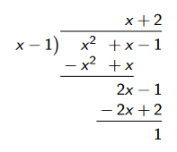

Univariate integration#
References and reading guide#
These are references that are suitable for an elementary course on mathematical economics.
[10Bra13]: Chapter 8 (pp. 427-476).
[10HJP87]: Chapters 14 and 15 (pp. 533-645).
[10Sha95]: Chapter 9 (pp. 408-449).
[10SHSC16]: Chapter 9 (pp. 319-373).
These are references that are suitable for a first-year undergraduate course for mathematics majors on calculus.
[10Kli67]: Chapters 3, 5, 6, 9, 10, 11, 12, 14, 15, and 16.
[10Sil69]: Chapters 7 and 14.
[10Spi06]: Chapters 13, 14, 18, and 19.
These references are suitable for an intermediate course on mathematical economics.
- 10AA83(1,2,3,4)
AA Alchian and WR Allen. Exchange and production: Competition, coordination and control (third edition). Wadsworth Publishing Company, 1983.
- 10Bra13
T Bradley. Essential mathematics for economics and business (fourth edition). John Wiley and Sons, 2013.
- 10CF89
KE Case and RC Fair. Principles of Economics. Prentice-Hall, 1989.
- 10CW05
AC Chiang and K Wainwright. Fundamental methods of mathematical economics (fourth edition). McGraw-Hill, 2005.
- 10GKM09
J Gans, S King, and NG Mankiw. Principles of microeconomics (fourth edition). Cengage Learning Australia, 2009.
- 10GR81
H Gravelle and R Rees. Microeconomics. Longman Group, 1981.
- 10HJP87
EF Haeussler Jr and RS Paul. Introductory mathematical analysis for business, economics, and the life and social sciences (fifth edition). Prentice-Hall, 1987.
- 10Ham06(1,2)
DS Hamermesh. Economics is everywhere (second edition). McGraw-Hill-Irwin, 2006.
- 10Hey91
P Heyne. The economic way of thinking (sixth edition). Macmillan Publishing Company, 1991.
- 10Hir88
J Hirshleifer. Price theory and applications (fourth edition). Prentice-Hall, 1988. With the assistance of M Sproul.
- 10HGH05
J Hirshleifer, A Glazer, and D Hirshleifer. Price theory and applications: Decisions, markets, and information (seventh edition). Cambridge University Press, 2005.
- 10Kli67
M Kline. Calculus: An intuitive and physical approach (second edition). Dover Publications, 1967. The 1998 Dover republication of the original John Wiley and Sons second edition.
- 10LL92
D Leonard and NV Long. Optimal control theory and static optimization in economics. Cambridge University Press, 1992.
- 10Nic87
W Nicholson. Intermediate microeconomics and its applications (fourth edition). The Dryden Press, 1987.
- 10Nic98
W Nicholson. Microeconomic theory: Basic principles and extensions (seventh edition). The Dryden Press, 1998.
- 10Sha95
J Shannon. Mathematics for business, economics and finance. John Wiley and Sons, 1995.
- 10Sil69(1,2)
RA Silverman. Modern calculus and analytic geometry. Dover Publications, 1969. The 2002 Dover corrected republication of the original 1969 Macmillan Company edition.
- 10SB94
C Simon and L Blume. Mathematics for economists. WW Norton and Co, 1994.
- 10Spi06
M Spivak. Calculus (third edition). Cambridge University Press, 2006.
- 10SHSC16
K Sydsæter, P Hammond, A Strøm, and A Carvajal. Essential mathematics for economic analysis (fifth edition). Pearson Education, 2016.
- 10Tak93
A Takayama. Analytical methods in economics. The University of Michigan Press, 1993.
- 10Var87
HR Varian. Intermediate microeconomics: a modern approach. WW Norton and Company, 1987.
- 10Var92
HR Varian. Microeconomic analysis (third edition). WW Norton and Sons, 1992.
Note: this reference list combines the references for all sections of this lecture.
Anti-derivatives and indefinite integrals#
What is an anti-derivative?#
Let \(I \in \mathbb{R}\) be a non-empty open interval of real numbers that contains more than a single point. In otherwords,
wherea \(\in \mathbb{R}, b \in \mathbb{R}\), and \(a<b\).
Let \(f: I \longrightarrow \mathbb{R}\) be some given univariate real-valued function. Suppose that there exists some function \(F: I \longrightarrow \mathbb{R}\) such that
In this case, the function \(F(x)\) is said to be an anti-derivative of the function \(f(x)\) on the interval \(I\).
Anti-derivatives are NOT unique#
If the function \(F(x)\) is an anti-derivative of the function \(f(x)\) on the interval \(I\), then so is the function \(G(x)=F(x)+C\), where \(C \in \mathbb{R}\) is some fixed real number. This can be seen by differentiating \(G(x)\) with respect to \(x\). Upon doing this, we obtain
The constant \(C \in \mathbb{R}\) is known as an arbitrary constant because it can take the form of any given real number. In effect, if the function \(F(x)\) is an anti-derivative of the function \(f(x)\) on the interval \(I\), then there is an entire family of such anti-derivatives of \(f(x)\) on the interval \(I\). This family is given by the set
When the domain of a univariate real-valued function \(f(x)\) takes the form of a connected open interval of real numbers \(I=(a, b)\), and if \(F(x)\) is an anti-derivative of \(f(x)\), then every anti-derivative of \(f(x)\) must belong to the set \(\{F(x)+C: C \in \mathbb{R}\}\).
However, this result is not true when the domain of the function \(f(x)\) is not a connected open interval of real numbers. This is established by the following counter-example that involves a non-connected (that is, dis-joint) domain for the function \(f(x)\).
Suppose that
and
Note that \(F^{\prime}(x)=G^{\prime}(x)=f(x)\) for all \(x \in(0,1) \cup(2,3)\). Thus both \(F(x)\) and \(G(x)\) are anti-derivatives of \(f(x)\). However, there is no single constant \(C \in \mathbb{R}\) such that \(G(x)=F(x)+C\) for all \(x \in(0,1) \cup(2,3)\).
The problem that occurs in this counter-example is as follows:
The arbitrary constant that is required to ensure that \(G(x)=F(x)+C\) for all \(x \in(0,1)\) (namely \(C_{1}=1\) ) is different to the arbitrary constant that is required to ensure that \(G(x)=F(x)+C\) for all \(x \in(2,3)\) (namely \(C_{2}=-1\) ).
While the result that the entire set of anti-derivatives of \(f(x)\) can be found by adding different single arbitrary constants to a particular anti-derivative of \(f(x)\) does not apply in this counter-example as a whole, it does apply to any case where we restrict the domain of the function to a subset of the entire domain that is a connected open interval.
In particular, the result applies if we restrict the domain in the counter-example to be either \((0,1)\) or \((2,3)\).
What is an indefinite integral?#
Suppose that the function \(F(x)\) is an anti-derivative of the function \(f(x)\) on the connected open interval \(I\). The indefinite integral of \(f(x)\), which is denoted by \(\int f(x) d x\), is simply an arbitrary member of the set of all anti-derivatives of \(f(x)\) on the interval \(I\). In other words, the indefinite integral of \(f(x)\) on the interval \(I\) is
where \(C \in \mathbb{R}\) is an arbitrary constant. Note that here, the arbitrary constant \(C\) is interpreted as being truly arbitrary, rather than taking on a particular value.
Some terminology#
Suppose that \(f: I \longrightarrow \mathbb{R}\), where \(I \subseteq \mathbb{R}\) is a connected open interval, and \(F^{\prime}(x)=f(x)\) for all \(x \in I\).
\(\int f(x) d x=F(x)+C\) is the indefinite integral of \(f(x)\).
\(f(x)\) is the integrand.
\(d x\) means “with respect to \(x\) “. (In other words, \(x\) is the variable of integration.)
\(F(x)\) is an anti-derivative of \(f(x)\).
\(C\) is an arbitrary constant.
Some useful formulae#
Suppose that \(f: I \longrightarrow \mathbb{R}\) is at least once continuously differentiable on \(I\), where \(I \subseteq \mathbb{R}\) is a connected open interval, and \(F^{\prime}(x)=f(x)\) for all \(x \in I\). The following formulae apply to \(f(x)\).
\(\frac{d}{d x} \int f(x) d x=f(x)\).
\(d \int f(x) d x=f(x) d x\).
\(\int f^{\prime}(x) d x=f(x)+C\).
We will now provide an informal justification for each of these results.
Claim: \(\frac{d}{d x} \int f(x) d x=f(x)\).
Informal proof.
Suppose that \(F(x)\) is an anti-derivative of \(f(x)\).
This means that \(\int f(x)=F(x)+C\).
Clearly, we must have \(\frac{d}{d x} \int f(x)=\frac{d}{d x}(F(x)+C)\).
But \(\frac{d}{d x}(F(x)+C)=\frac{d}{d x} F(x)+0=\frac{d}{d x} F(x)=f(x)\), because \(F(x)\) is an anti-derivative of \(f(x)\) and \(C\) is an (albeit arbitrary) constant.
Thus we have \(\frac{d}{d x} \int f(x) d x=f(x)\).
Claim: \(d \int f(x) d x=f(x) d x\).
Informal proof.
Suppose that \(F(x)\) is an anti-derivative of \(f(x)\).
This means that \(\int f(x)=F(x)+C=G(x)\).
Recall that \(d G(x) \approx \frac{d G(x)}{d x} d x=f(x) d x\).
This approximation is very accurate for really small values of \(\delta x\) when \(G(x)\) is well behaved. In such circumstances, we will have \(\int d G(x)=\int f(x) d x\).
Differentiating both sides of this equation with respect to \(x\) yields \(d G(x)=f(x) d x\), so that we have \(d \int f(x) d x=f(x) d x\).
Claim: \(\int f^{\prime}(x) d x=f(x)+C\).
Informal proof.
Suppose that \(f(x)\) is at least once continuously differentiable, and denote its derivative by \(f^{\prime}(x)\).
Let \(F(x)=f(x)+C\), where \(C\) is an arbitrary constant.
Clearly we must have \(\frac{d}{d x} F(x)=\frac{d}{d x} f(x)+0=\frac{d}{d x} f(x)=f^{\prime}(x)\).
Furthermore, we have already shown that \(\frac{d}{d x} \int g(x) d x=g(x)\). This means that we must have \(\frac{d}{d x} \int f^{\prime}(x) d x=f^{\prime}(x)\).
Thus we have \(\frac{d}{d x} \int f^{\prime}(x) d x=\frac{d}{d x} F(x)\),
Upon integrating both sides of this equation, we obtain \(\int f^{\prime}(x) d x=F(x)\), so that we have \(\int f^{\prime}(x) d x=f(x)+C\).
Suppose that \(f: I \longrightarrow \mathbb{R}\) and \(g: I \longrightarrow \mathbb{R}\) are both at least once continuously differentiable on \(I\), where \(I \subseteq \mathbb{R}\) is a connected open interval. Suppose also that \(k \in \mathbb{R}\) is some given constant, \(C \in \mathbb{R}\) is an arbitrary constant, \(F^{\prime}(x)=f(x)\) for all \(x \in I\), and \(G^{\prime}(x)=g(x)\) for all \(x \in I\).
The following formulae apply to \(f(x)\) and \(g(x)\).
\(\int[f(x)+g(x)] d x=\int f(x) d x+\int g(x) d x=F(x)+G(X)+C\).
\(\int k f(x) d x=k \int f(x) d x=k F(x)+C\).
We will provide an informal justification for each of these two results shortly. But first, note that the above two results can be used to establish the following result.
Suppose that the functions \(f_{i}: I \longrightarrow \mathbb{R}, i \in\{1,2, \cdots, n\}\), are all at least once continuously differentiable on \(I\), where \(I \subseteq \mathbb{R}\) is a connected open interval. Suppose also that \(k_{i} \in \mathbb{R}, i \in\{1,2, \cdots, n\}\), are some given constants, and \(C \in \mathbb{R}\) is an arbitrary constant. Suppose as well that \(F_{i}^{\prime}(x)=f_{i}(x)\) for all \(x \in I\) and for each \(i \in\{1,2, \cdots, n\}\). The following formula applies to \(\left\{f_{i}(x)\right\}_{i=1}^{n}\).
Claim: \(\int[f(x)+g(x)] d x=\int f(x) d x+\int g(x) d x=F(x)+G(x)+C\)
Informal proof.
Note that
Note also that \(\int f(x) d x=F(x)+C_{f}\) and \(\int g(x) d x=G(x)+C_{g}\), so that
where \(C_{f}, C_{g}\), and \(C=C_{f}+C_{g}\) are arbitrary constants.
Claim: \(\int k f(x) d x=k \int f(x) d x=k F(x)+C\).
Informal proof.
Note that
Note also that
where \(C_{f}\) and \(C=k C_{f}\) are arbitrary constants.
An overview of integration techniques#
There are a number of techniques that can be used to find the indefinite integral of a function. These include the following:
Direct integration. (This involves recognising that the integrand is the derivative of a particular function, or, rather, class of functions. It is most useful when the integrand is an elementary function.)
Integration by substitution. (This is the integration counterpart to the chain rule of differentiation.)
Integration by parts. (This is the integration counterpart to the product rule of differentiation.)
Integration by partial fractions. (This technique is sometimes useful when the integrand is the ratio of two polynomial functions.)
Direct integration#
Direct integration makes use of the fact that if \(F^{\prime}(x)=f(x)\), then the indefinite integral of \(f(x)\) is given by \(\int f(x) d x=F(x)+C\).
If we reconise the integrand \(f(x)\) as being the derivative of some function \(F(x)\) with respect to the variable \(x\), then we automatically know that the indefinite integral of \(f(x)\) is equal to \(F(x)+C\).
Some examples:
Since \(\frac{d}{d x} x^{\alpha}=\alpha x^{\alpha-1}\), we have \(\int \alpha x^{\alpha-1} d x=x^{\alpha}+C\).
Since \(\frac{d}{d x} e^{a x}=a e^{a x}\), we have \(\int a e^{a x} d x=e^{a x}+C\).
Let \(x \in(0, \infty)\). Since \(\frac{d}{d x} \ln (x)=\frac{1}{x}\), we have \(\int \frac{1}{x} d x=\ln (x)+C\).
Integration by substitution#
Suppose that \(G:(a, b) \longrightarrow \mathbb{R}\) be a function that is differentiable on the interval \((a, b) \subseteq \mathbb{R}\) and let \(g(t)=G^{\prime}(t)=\frac{d G(t)}{d t}\) be its derivative when \(t \in(a, b)\).
Suppose that \(t:(c, d) \longrightarrow(a, b)\) be a function that is differentiable on the interval \((c, d) \subseteq \mathbb{R}\) and let \(t^{\prime}(x)=\frac{d t(x)}{d x}\) be its derivative when \(x \in(c, d)\).
Consider the composite function \(F:(c, d) \longrightarrow \mathbb{R}\) defined by \(F(x)=G(t(x))\).
Since \(G(t)\) is differentiable on \((a, b), t:(c, d) \longrightarrow(a, b)\), and \(t(x)\) is differentiable on \((c, d)\), we know that \(F(x)\) is differentiable on \((c, d)\). Denote its derivative by \(f(x)=F^{\prime}(x)=\frac{d F(x)}{d t}\) when \(x \in(c, d)\).
We know from the chain rule of differentiation that \(f(x)=F^{\prime}(x)=G^{\prime}(t(x)) t^{\prime}(x)=g(x) t^{\prime}(x)\).
Recall that we have \(F(x)=G(t(x))\) and \(f(x)=F^{\prime}(x)=g(t(x)) t^{\prime}(x)\), where \(g(t)=G^{\prime}(t)\). Thus we know that \(F(x)+C=\int F(x) d x=\int g(t(x)) t^{\prime}(x) d x\), where \(C \in \mathbb{R}\) is an arbitrary constant.
Recall that \(d t=\left(\frac{d t(x)}{d x}\right) d x=t^{\prime}(x) d x\). Thus we have
when \(G(t)\) is evaluated at the parameterised point \(t=t(x)\).
Note that we need to remember to substitute \(t=t(x)\) into \(G(t)\) to obtain the correct result here.
We now have a framework for discussing the technique of integration by substitution. Clearly, this is the integral counterpart of the chain rule of differentiation. This techniques is useful in circumstances where each of the following properties is true.
You do not know how to calculate the indefinite integral of \(f(x)\) with respect to \(x\).
You can see a way to express \(f(x)\) as \(f(x)=g(t(x)) t^{\prime}(x)\) for which you know the functions \(g(t)\) and \(t(x)\).
You do know how to calculate the indefinite integral of \(g(t)\) with respect to \(t\).
Example
Suppose that we want to find \(\int f(x) d x=\int \frac{\ln (x)}{x} d x\). Let \(g(t)=t\) and \(t(x)=\ln (x)\). This means that \(g(t(x))=t(x)=\ln (x)\) and \(t^{\prime}(x)=\frac{1}{x}\). Note that \(f(x)=\frac{\ln (x)}{x}=g(t(x)) t^{\prime}(x)\) and \(\int g(t) d t=\int t d t=\frac{t^{2}}{2}+C\).
Thus we have
As a check on the accuracy of our proposed solution, note that
Example
Suppose that we want to find \(\int f(x) d x=\int e^{x^{2}} x d x\). Let \(g(t)=\left(\frac{1}{2}\right) e^{t}\) and \(t(x)=x^{2}\). This means that \(g(t(x))=\left(\frac{1}{2}\right) e^{t(x)}=e^{x^{2}}\) and \(t^{\prime}(x)=2 x\). Note that \(f(x)=e^{x^{2}} x=g(t(x)) t^{\prime}(x)\) and
Thus we have
As a check on the accuracy of our proposed solution, note that
Integration by parts#
Suppose that \(u:(a, b) \longrightarrow \mathbb{R}\) and \(v:(a, b) \longrightarrow \mathbb{R}\) are both functions that are differentiable on the interval \((a, b) \subseteq \mathbb{R}\). Suppose also that there exist two other functions that are both differentiable on the interval \((a, b) \subseteq \mathbb{R}, G:(a, b) \longrightarrow \mathbb{R}\) and \(G:(a, b) \longrightarrow \mathbb{R}\), such that \(G^{\prime}(x)=u^{\prime}(x) v(x)\) and \(H^{\prime}(x)=v^{\prime}(x) u(x)\).
Consider the function \(J:(a, b) \longrightarrow \mathbb{R}\) defined by \(J(x)=u(x) v(x)\). We know from the product rule of differentiation that
which can be rewritten as
We have obtained the expression
This expression can be rearranged to obtain
Thus we know that
Note that
where \(C \in \mathbb{R}\) is an arbitrary constant.
This gives us
Note also that \(\int u^{\prime} v d x\) and \(\int v^{\prime} u d x\) both implicitly incorporate arbitrary constants. If we absorb the explicit arbitrary constant \((C)\) in the above expression into the implicity arbitrary constants in the \(\int u^{\prime} v d x\) and \(\int v^{\prime} u d x\) terms in some appropriate fashion, then we can rewrite that expression as
We have obtained the expression
This expression forms the foundation for the integration technique known as integration by parts. Clearly, integration by parts is the integral counterpart to the product rule of differentiation.
Integration by parts is particularly useful when you want to find \(\int f(x) d x=\int u^{\prime} v d x\) and either of the following two situations occur.
The indefinite integral \(\int v^{\prime} u d x\) is easier to obtain than the indefinite integral \(\int u^{\prime} v d x\).
It turns out that \(\int v^{\prime} u d x=\mathrm{k} \int u^{\prime} v d x\) for some constant \(k \in \mathbb{R}\). (In this case, you get a functional equation in which the “variable” is the integrand \(\int u^{\prime} v d x\). This equation can then be solved to obtain integrand \(\int u^{\prime} v d x\).
Sometimes, you might need to undertake multiple iterations of the technique of integration by parts.
Example
We want to find \(\int \ln (x) d x\). Let \(u(x)=x\) and \(v(x)=\ln (x)\). This means that \(u^{\prime}(x)=1\) and \(v^{\prime}(x)=\frac{1}{x}\). This allows us to express the required integral as
\(\int \ln (x) d x=\int(1) \ln (x) d x=\int u^{\prime}(x) v(x) d x\).
Integrating by parts, and ignoring any arbitrary constants, we obtain
Thus we can conclude that
where \(C \in \mathbb{R}\) is an arbitrary constant.
Example
We want to find \(\int \frac{\ln (x)}{x} d x\). Let \(u(x)=\ln (x)\) and \(v(x)=\ln (x)\). This means that \(u^{\prime}(x)=\frac{1}{x}\) and \(v^{\prime}(x)=\frac{1}{x}\). This allows us to express the required integral as \(\int \frac{\ln (x)}{x} d x=\int u^{\prime}(x) v(x) d x\).
Integrating by parts, and ignoring any arbitrary constants, we obtain
Ignoring any arbitrary constants, we have shown that
This equation can be rearranged to obtain
so that, ignoring any arbitrary constants, we have
Thus we know that
where \(C \in \mathbb{R}\) is an arbitrary constant.
Integration of rational functions#
If the the integrand \(f(x)\) is a rational function, then decomposing that rational function into the sum of a number of more simple rational functions can sometimes help with finding the indefinite integral \(\int f(x) d x\). This decomposition technique is known as the method of “partial fractions”.
A rational function \(R(x)\) is simply the ratio of two polynomial functions, \(P(x)\) and \(Q(x)\). It takes the form
where
is an \(m\) th order polynomial (so that \(a_{m} \neq 0\) ), and
is an \(n\)th order polynomial (so that \(b_{n} \neq 0\) ).
Note that there is no requirement that the polynomial functions \(P(x)\) and \(Q(x)\) be of the same order. (In other words, we do not require that \(m=n\).)
The most interesting case is when \(m<n\). In such cases, the rational function \(R(x)\) is called a “proper” rational function.
When \(m \geqslant n\), then we can always use the process of long division to write the original rational function \(R(x)\) as the sum of a polynomial function \(Y(x)\) and another proper rational function \(R^{*}(x)\).
This is nicely illustrated by the following example from Chapter 14 of [10Sil69]. Consider the rational function \(R(x)=\frac{x^{2}+x-1}{x-1}\). Note the following.
Thus we have
Since any non-proper rational function \(R(x)\) can be written as the sum of a polynomial function \(Y(x)\) and a proper rational function \(R^{*}(x)\), we know that
where
Thus when \(R(x)\) is a non-proper rational function, we can easily calculate the integral of the polynomial component of that function. Doing so yields:
This leaves us with the task of finding the integral of the proper rational function that constitutes the remainder term (in other words, the task of finding \(\left.\int R^{*}(x) d x\right)\). In cases where \(R(x)\) is a proper rational function to begin with, then this last step is the only task that we face.
Sometimes you will be able to find \(\int R^{*}(x) d x\) through direct integration, or integration by substitution, or integration by parts. In other cases, the technique of partial fractions might help you to find \(\int R^{*}(x) d x\). You might like to review the material on partial fractions that we covered earlier in the semester at this point in time.
The definite integral and the area under a curve#
Informally, a definite integral of a function tells us the area under the curve that represents the graph of that function between two points.
Illustrate this on the white-board.
Slightly more precisely, it tells us the aggregate signed area between the curve that represents the graph of that function and the axis for the independent variable between two points.
Some care is needed here. When the curve is above the axis, the area enters the aggregate sum positively. When the curve is below the axis, the area enters the aggregate sum negatively.
Illustrate this on the white-board.
This “aggregate signed area” is related to the indefinite integral of the function. This relationship is captured through the “Fundamental Theorem of Calculus”. More on this later.
Area approximation by the sum of box areas#
How might we try and measure the area under a curve? One way might be to try and approximate it by adding up the area of boxes whose sum seems like it should be close to the area under the curve. The advantage of this approach is that calculating the area of boxes (or, rather rectangles) is easy. We know from high school (and perhaps even primary school) that it is just length times breadth (or height times width).
But how do we form these boxes?
Illustrate on the white-board.
Suppose that we want to calculate the area under the graph of the function \(f(x)\) between the points \(a\) and \(b\), where \(a<b\). To keep life simple, suppose also that \(f(x)>0\) for all \(x \in[a, b]\).
Choose a finite partition of the interval \([a, b]\). This will take the form \(\left\{a, t_{1}, t_{2}, t_{3}, \cdots, t_{n-1}, t_{n}, b\right\}\).
Note that \(\left[a, t_{1}\right] \cup\left(t_{1}, t_{2}\right] \cup\left(t_{2}, t_{3}\right] \cup \cdots \cup\left(t_{n-1}, t_{n}\right] \cup\left(t_{n}, b\right]=[a, b]\) and \(\left[a, t_{1}\right] \cap\left(t_{1}, t_{2}\right] \cap\left(t_{2}, t_{3}\right] \cap \cdots \cap\left(t_{n-1}, t_{n}\right] \cap\left(t_{n}, b\right]=\varnothing\).
Let \(B_{1}=\left[a, t_{1}\right], B_{n+1}=\left(t_{n}, b\right]\), and \(B_{k}=\left(t_{k-1}, t_{k}\right]\) for \(k \in\{2,3, \cdots, n\}\).
This allows us to express our partition as \(\left\{B_{1}, B_{2}, \cdots, B_{n+1}\right\}\).
We can use this partition to form the bases of \((n+1)\) boxes.
The distances for each of these bases, moving from left to right along the \(x\)-axis between the points \(x=a\) and \(x=b\), are \(\left(t_{1}-a\right)\), \(\left(t_{2}-t_{1}\right),\left(t_{3}-t_{2}\right), \cdots,\left(t_{n}-t_{n-1}\right)\), and \(\left(b-t_{n}\right)\).
Note that \(B_{1}\) has a base distance of \(\left(t_{1}-a\right)=w_{1}, B_{n+1}\) has a base distance of \(\left(b-t_{n}\right)=w_{n+1}\), and \(B_{k}\) has a base distance of \(\left(t_{k}-t_{k-1}\right)=w_{k}\) for \(k \in\{2,3, \cdots, n\}\).
But what about the height of these boxes?
There are many possibilities. We will focus on two bounding possibilities. One of these will provide a lower bound for the area of each box. The other will provide an upper bound for the area of each box.
Let \(h_{k}=\min \left\{f(x): x \in B_{k}\right\}\) and \(H_{k}=\max \left\{f(x): x \in B_{k}\right\}\).
A lower bound for the area underneath the graph of the function on interval \(B_{k}\) is given by \(L_{k}=h_{k} w_{k}\).
An upper bound for the area underneath the graph of the function on interval \(B_{k}\) is given by \(U_{k}=H_{k} w_{k}\).
We can obtain a lower bound for the area underneath the graph of the function between the points \(x=a\) and \(x=b\) by summing all of the \(L_{k}\) terms for our partition. This lower bound will be given by \(L(a, b)=\sum_{k=1}^{n+1} L_{k}\).
We can obtain an upper bound for the area underneath the graph of the function between the points \(x=a\) and \(x=b\) by summing all of the \(U_{k}\) terms for our partition. This upper bound will be given by \(U(a, b)=\sum_{k=1}^{n+1} U_{k}\).
These types of upper bounds and lower bounds for the area underneath the graph of the function between the points \(x=a\) and \(x=b\) are known as upper Riemann sums and lower Riemann sums respectively.
The definite integral as a limit of Riemann sums#
Let \(\hat{w}=\max \left\{w_{k}: k \in\{1,2, \cdots, n+1\}\right\}\). If
\(\lim _{\hat{w} \rightarrow 0} L(a, b)\) exists,
\(\lim _{\hat{w} \rightarrow 0} U(a, b)\) exists, and
\(\lim _{\hat{w} \rightarrow 0} L(a, b)=\lim _{\hat{w} \rightarrow 0} U(a, b)\),
then the definite integral exists and is defined to be
This type of definite integral is sometimes known as a Riemann integral. When this definite integral exists, it is equal to the aggregate signed area “underneath” the graph of a function between two points.
The fundamental theorem of calculus#
The fundamental theorem of calculus says that, if \(F^{\prime}(x)=f(x)\) for all \(x \in[a, b]\), then
Differentiating definite integrals#
Introduction#
Let
Suppose that it is possible that \(a, b\), and \(f(x)\) all depend on some parameter \(s\).
We might be interested in calculating the impact of \(s\) on \(I(a, b)\).
This is actually a topic from multivariate calculus. However, we will present it here because it is an important result that gets used in economics. The result is known as “Leibniz’ rule”.
Leibniz’ Rule#
Let
Suppose that it is possible that \(a, b\), and \(f(x)\) all depend on some parameter \(s\). The impact of a small change in \(s\) on \(I(a, b)\) is given by Leibniz’ rule. Leibniz’ rule says that
Here we will briefly consider four special sub-cases of Leibniz’ rule. Note that these four sub-cases are not the only possible sub-cases.
Case 1: \(a\) and \(b\) are functions of \(s\), but \(f(x)\) is not a function of \(s\). Here we have:
Case 2: \(a\) is a function of \(s\), but \(b\) and \(f(x)\) are not functions of \(s\). Here we have:
Case 3: \(b\) is a function of \(s\), but \(a\) and \(f(x)\) are not functions of \(s\). Here we have:
Case 4: \(f(x)\) is a function of \(s\), but \(a\) and \(b\) are not functions of \(s\). Here we have:
Improper integrals#
The definite integral \(\int_{a}^{b} f(x) d x\) is said to be improper if either the distance between the bounds of integration is infinite (that is, if \(d(a, b)=|b-a|=\infty)\), or if the integrand \(f(x)\) is discontinuous on the interval of integration \([a, b]\), or both of these possibilities occur. A definite integral that is improper because the distance between the bounds of integration is infinite will take one of the following three forms:
\(\int_{a}^{\infty} f(x) d x\),
\(\int_{-\infty}^{b} f(x) d x\), or
\(\int_{-\infty}^{\infty} f(x) d x\).
A discontinuity of the integrand can take place at one of three location categories. These are:
The lower bound of integration (that is, \(f(x)\) is discontinuous at the point \(x=a\) );
The upper bound of integration (that is, \(f(x)\) is discontinuous at the point \(x=b\) );
An interior point of the interval of integration (that is, \(f(x)\) is discontinuous at the point \(x=c \in(a, b))\).
Of course, it is possible for the integrand to have muliple points of discontinuity on the interval of integration. Sometimes, improper integrals exist and sometimes they do not. Whether or not an improper integral exists will depend on whether or not a particular limit (or multiple particular limits) exist.
The improper integral \(\int_{a}^{\infty} f(x) d x\) exists if the limit \(\lim_ {b \uparrow \infty} \int_{a}^{b} f(x) d x\) exists, in which case we have
The improper integral \(\int_{-\infty}^{b} f(x) d x\) exists if the limit \(\lim _{a \downarrow-\infty} \int_{a}^{b} f(x) d x\) exists, in which case we have
The improper integral \(\int_{\infty}^{\infty} f(x) d x\) exists if the limit \(\lim _{a \downarrow-\infty, b \uparrow \infty} \int_{a}^{b} f(x) d x\) exists, in which case we have
If the integrand \(f(x)\) is discontinuous at the point \(x=a\), the improper integral \(\int_{a}^{b} f(x) d x\) exists if the limit \(\lim_{\theta \downarrow a} \int_{\theta}^{b} f(x) d x\) exists, in which case we have
If the integrand \(f(x)\) is discontinuous at the point \(x=b\), the improper integral \(\int_{a}^{b} f(x) d x\) exists if the limit \(\lim _{\psi \uparrow b} \int_{a}^{\psi} f(x) d x\) exists, in which case we have
If the integrand \(f(x)\) is discontinuous at the point \(x=c \in(a, b)\), the improper integral \(\int_{a}^{b} f(x) d x\) exists if both the limit from below \(\lim _{\lambda \uparrow c} \int_{a}^{\lambda} f(x) d x\) exists and the limit from above \(\lim _{\delta \downarrow c} \int_{\delta}^{b} f(x) d x\) exists, in which case we have
Some economic and econometric applications#
Consumer Welfare: Total Consumer Benefit, Consumer Surplus and Change in Consumer Surplus. (See separate section below.)
Producer Welfare: Total Operating Costs, Producers Surplus, and Change in Producers Surplus. (See separate section below.)
Choice over Time: Lifetime Utility.
Choice under Uncertainty: Expected Utility.
The Relationship between Probability Density Functions and Cumulative Distribution Functions.
The Expected Value and Other Moments of a Probability Distribution.
The Moment Generating Function and the Characteristic Function.
Preferences over time contingent consumption#
Consider a consumer that must choose how to allocate their lifetime wealth over consumption at various points in time.
If time is continuous over some interval \([0, T]\) and the consumer can potentially consume at every point in time \(t \in[0, T]\), then a time-stream of consumption is a function of the form \(c:[0, T] \longrightarrow[0, \infty)\). This function specifies, for each point in time \(t \in[0, T]\), the amount of consumption \(c(t) \in[0, \infty)\) that is chosen by the consumer (at time zero) for the point in time \(t \in[0, T]\).
In such cases, we sometimes assume (at least partly for tractability reasons) that such a consumer’s preferences over alternative consumption streams can be represented by a stationary “lifetime utility function” of the form
where \(\rho \in(0,1)\) is a fixed rate of time preference and \(u(c)\) is a stationary per-period (or point-in-time) utility function.
Preferences over state contingent consumption#
Suppose that there are an uncountably infinite number of potential states of the world, with each point in the interval non-empty closed interval \((a, b)\) corresponding to a particular state. Denote the state variable by \(\omega \in[a, b]\).
Nature chooses which state of nature will actually prevail by drawing one state from \((a, b)\) according to a commonly known probability distribution that has a probability density function of the form \(f:(a, b) \longrightarrow[0,1]\).
Suppose that a consumer’s consumption level varies with the random state of Nature, so that it is given by a function of the form \(c:(a, b) \longrightarrow[0, \infty)\).
If the consumer is a von Neumann-Morgenstern (vNM) expected utility maximiser with a Bernoulli utility function \(u:[0, \infty] \longrightarrow \mathbb{R}\) of the form \(u(c)\), then the “vNM expected utility function” for this consumer is
Consumer demand and consumer welfare#
Sources, references and reading guide#
None of this material originates with me. It has been drawn from, or influenced by, a number of sources. Some of these might include some or all of the sources listed in the references below.
These are references that are suitable for a first-year undergraduate economics course.
[10AA83]: Chapter 2 (pp. 13-44).
[10CF89]: Chapters 4-6 (pp. 77-162).
[10GKM09]: Chapters 4, 5, 7 and 22 (pp. 62-112, 134-154 and 486-515).
[10Ham06]: Chapters 2, 5 and 6 (pp. 15-24 and 49-77).
[10Hey91]: Chapter 2 (pp. 15-45).
These are references that are suitable for a second-year undergraduate economics course.
[10Hir88]: Chapters 2 and 7E (pp. 23-54 and 204-212).
[10HGH05]: Chapters 2 and 7.3.
[10Nic87]: Chapters 1 and 12 (Consumers Surplus) (pp. 5-21 and 334).
[10Var87]: Chapters 1 and 15 (pp. 1-19 and 242-266).
These are references that are suitable for a third-year undergraduate economics course.
Marginal private benefit and demand#
The marginal benefit of an additional unit of a good to you is the maximum amount that you would pay for that additional unit, given your consumption level of the good without the additional unit.
The marginal private benefit schedule for a good is a function of the form \(M B(Q\); other \()\), where \(Q\) is the quantity of the good that is consumed, other is the values that are taken by a set of other factors that affect the marginal benefit of the good in question and \(M B\) ( \(Q\); other) is the benefit that the consumer receives from the last of the \(Q\) units of the good that he consumed.
As a matter of convenience, we will often write \(M B(Q ;\) other \()\) as simply \(M B(Q)\).
Diminishing marginal benefits#
We will assume that the marginal private benefit schedule displays diminishing marginal returns. In other words, holding the values of the things that are in other fixed, the benefit from consuming a further unit of the good (that is, the marginal benefit) will decrease as \(Q\) increases. This means that the marginal private benefit schedule for a good will be downward sloping in \((Q, P)\)-space.
Discrete MB schedule example#
This example comes from [10AA83] (p. 43, Question 43).
Suppose that only integer (whole number) amounts of a particular good (call it \(X\) ) may be consumed. The marginal benefit schedule for good \(X\) is given by the following table.
\(\mathbf{Q}\) |
1 |
2 |
3 |
4 |
5 |
6 |
7 |
8 |
9 |
10 |
|---|---|---|---|---|---|---|---|---|---|---|
\(\mathbf{M B}\) |
\(\$ 10\) |
\(\$ 9\) |
\(\$ 8\) |
\(\$ 7\) |
\(\$ 6\) |
\(\$ 5\) |
\(\$ 4\) |
\(\$ 3\) |
\(\$ 2\) |
\(\$ 1\) |
The following diagram is the graph of this marginal private benefit schedule.
{kind=link}
Fig. 28 Marginal private benefit schedule (discrete)#
Linear MB schedule example#
Suppose that the marginal private benefit schedule is given by the equation \(M P B=20-4 Q\).
This is the equation of a straight line in \((Q, M P B)\)-space with a MPB intercept equal to \(\$ 20\) and a slope equal to \(( -4 ) (\$/\text{Unit})\). The diagram below is a graph of this marginal private benefit schedule.
{kind=link}
Fig. 29 Marginal private benefit schedule (linear)#
Non-Linear MB schedule example#
Suppose that the marginal private benefit schedule is given by the equation
This is the equation of a rectangular hyperbola in \((Q, M P B)\)-space (or, more accurately, in \((Q+1, M P B)\)-space).
The diagram below is a graph of this marginal private benefit schedule.
{kind=link}
Fig. 30 Marginal private benefit schedule (nonlinear)#
Marginal benefit and demand#
A MPB schedule tells us how much an individual benefits from an additional unit of a good or service. This is, effectively, the maximum amount that the individual would be willing to pay for that additional unit.
A demand schedule tells us how many units of an item a consumer would be willing to purchase at a particular price. Clearly, a consumer will only choose to purchase an additional unit of a good if the MPB from that unit either matches or exceeds the price that must be paid for that unit.
Since the MPB schedule is downward sloping in \((Q, M P B)\)-space, an individual will purchase all units up to the point where MPB is equal to the price.
Let \(P\) denote the price of the good or service. Since the last unit that is purchased will be the one for which \(M P B=P\), we know that for any given price \(P\), the quantity demanded will be given by the point on the MPB schedule where \(M P B=P\).
Thus the inverse demand schedule can be found by replacing MPB (the LHS of the equation for the MPB schedule) with the price of the commodity, \(P\). This yields an equation of the form \(P=M B(Q)\). Since this is the inverse demand equation, we will sometimes write this as \(P=D^{-1}(Q)\). If we invert this inverse demand equation (that is, rearrange it to make \(Q\) the subject), then we obtain the demand equation, \(Q=D(P)\).
The Marshallian graphing convention#
In economics, we employ an unusual convention for graphing demand (and supply) functions. This convention is known as the Marshallian graphing convention.
You might recall from high school mathematics that the usual convention for graphing functions of the form \(y=f(x)\) is that the independent variable \((x)\) is depicted on the horizontal axis and the dependent variable \((y)\) is depicted on the vertical axis.
We typically view demand functions (and supply functions) as expressing quantity demanded (or supplied) as a function of price.
As such, under the standard graphing convention, we would place price on the horizontal axis and quantity on the vertical axis.
Instead of this standard convention, economists typically place quantity on the horizontal axis and price on the vertical axis.
What might be referred to as a demand curve (or a supply curve) under the Marshallian graphing convention would really be an inverse demand curve (or inverse supply curve) under the standard graphing convention.
The Marshallian convention means that, while we talk about demand curves (or supply curves), we actually draw inverse demand curves (or inverse supply curves). This means that you need to be careful when moving from the equation for a demand curve (or a supply curve) to the graph of that demand curve (or supply curve) if you are going to follow the Marshallian convention when graphing demand curves (or supply curves).
Suppose that we have a linear demand curve of the form
where \(a>0\) and \(b>0\).
The corresponding inverse-demand curve can be found as follows:
Note the inverse demand curve is also linear when the demand curve itself is linear.
Recall that we have a linear demand curve: of the form
where \(a>0\) and \(b>0\).
The slope of this demand curve is equal to \((-b)\) and the \(Q\)-intercept is the point \((0, a)\) in \((P, Q)\)-space.
It can be shown that the \(P\)-intercept is the point \(\left(\frac{a}{b}, 0\right)\) in \((P, Q)\)-space.
This is illustrated below using the standard mathematical convention for choice of axes.
{kind=link}
Fig. 31 Drawing a linear demand curve (not the Marshallian convention)#
Recall that the corresponding inverse demand curve is
where \(a>0\) and \(b>0\).
The slope of this demand curve is equal to \(\left\{-\left(\frac{1}{b}\right)\right\}\) and the \(P\)-intercept is the point \(\left(0, \frac{a}{b}\right)\) in \((Q, P)\)-space.
It can be shown that the \(P\)-intercept is the point \((a, 0)\) in \((Q, P)\)-space.
This is illustrated on the next page using the standard mathematical convention for choice of axes (which is equivalent to graphing the original demand curve using the Marshallian graphing convention).
{kind=link}
Fig. 32 Drawing a linear demand curve (using the Marshallian convention)#
Obtaining total benefit from marginal benefits#
Suppose that an individual consumes \(Q\) units of a good or service. What is the the total benefit to the individual of this level of consumption?
We will assume for the moment that the good or service in question can only be consumed in integer (that is, whole number) amounts.
This is the type of situation that was depicted in the discrete MPB schedule example provided earlier in these notes.
We can find the marginal benefits for each of the units that are consumed from the individual’s MPB schedule for this good or service.
The marginal benefit of the first unit is given by \(M P B(1)\), the marginal benefit of the second unit is given by \(\operatorname{MPB}(2), \cdots\), and the marginal benefit of the \(Q\) th unit is given by \(\operatorname{MPB}(Q)\).
The total benefit that the individual obtains from consuming \(Q\) units of this good or service is simply the sum over all units that are consumed of the MPB from each of those units.
In other words,
Note that this is simply the area below the MPB schedule. Since the MPB schedule coincides with the inverse demand schedule, this is also the area under the inverse demand schedule.
Graphically, the total benefit associated with consuming 10 units of a good or service for the case considered in the discrete MPB schedule example provided earlier is the shaded area under the MPB schedule in the diagram below.
Fig. 33 Total benefit (discrete MPB schedule)#
Numerically, the total benefit for this example can be calculated as follows.
Recall that when consumption must involve integer (that is, whole number) units, the relationship between total benefit and the relevant marginal private benefits is given by
This relationship can be extended to the case where consumption does not have to be measured in integer (that is, whole number) units. In the case where consumption of infinitesimal amounts is possible, the relevant equation becomes
As before, this is simply the area under the relevant MPB (or inverse demand) schedule between the points \(q=0\) and \(q=Q\).
Graphically, the total benefits associated with consuming \(Q\) units of a good or service is the shaded area under the MPB schedule in the following diagram.
While the diagram employs a linear inverse demand curve, it did not have to do so.
The same basic idea applies to non-linear inverse demand curves.
However, in non-linear cases, the area under the curve will not be equal to sum of the area of a rectangle and the area of a triangle.
Hence the need for the definite integral in the TPB formula provided earlier.
In the case where the MPB (or inverse demand) schedule is linear, the total private benefit can be calculated by using some simple geometry results from high school mathematics.
Suppose that the inverse demand curve for an individual is given by
and that the individual chooses to consume \(Q\) units of the good or service, where \(0<Q<\frac{a}{b}\).
Note that the marginal benefit from the \(Q\) th unit of this good or service is simply \((a-b Q)\). The total benefit for this case is illustrated in the diagram on the following slide.
{kind=link}
Fig. 34 Total benefit (linear inverse demand curve)#
In this particular example, the total private benefit from consumng \(Q\) units of the good or service is equal to the sum of the area of a rectangle and the area of a triangle.
The base of the rectangle is \(Q-0=Q\) units and the height of the rectangle is \((a-b Q)-0=(a-b Q) \$ /\) unit.
As such, the area of the rectangle is \(Q(a-b Q)=\left(a Q-b Q^{2}\right)\) (units)($/unit), which is simply \(\$\left(a Q-b Q^{2}\right)\).
The base of the triangle is \(Q-0=Q\) units and the perpendicular height of the triangle is \(a-(a-b Q)=b Q \$ /\) unit.
As such, the area of the triangle is \(\left(\frac{1}{2}\right) Q(b Q)=\frac{b Q^{2}}{2}\) (units)($/unit), which is simply \(\$\left(\frac{b Q^{2}}{2}\right)\).
This means that, in this particular example, the total private benefit from consuming \(Q\) units of the good or service is
The paradox of value#
The “Paradox of Value” is a term used to describe a potential confusion between marginal benefit and total benefit. It is sometimes known as the “Water-Diamond Paradox” because an example of this potential confusion that is commonly proposed concerns the value of water and the value of diamonds.
Water is needed to sustain life, while diamonds are not (or at least do not appear to be) essential for sustaining life. As such, some people might argue that water is much more valuable than diamonds.
However, the price of diamonds is very high compared to the price of water in at least some parts of the world (although the price of water might well be higher than it used to be).
A situation in which water is much more valuable than diamonds but the price of diamonds is much higher than the price of water might appear to be somewhat paradoxical.
But this is only the case if you confuse marginal benefit with total benefit.
Consumer surplus#
We have seen how to calculate the total benefit to a consumer of \(Q\) units of some commodity. But in general, the consumer will need to purchase those \(Q\) units. This involves giving up resources that could have been used to purchase other commodities. As such, the “net gain” to the consumer from \(Q\) units of a commodity is usually smaller than the total benefit of those units to the consumer. How might we measure the “net gain” to the consumer from purchasing \(Q\) units of a commodity?
Suppose that the consumer would optimally choose to purchase \(Q\) units of a commodity given its current price. We want to measure how much the consumer values being allowed to purchase those \(Q\) units of the commodity (given its current price). There are two common ways of answering this question. These are the “willingness to pay” approach and the “willingness to accept” approach.
The “willingness to pay” approach attempts to identify the maximum amount that a consumer would be willing to pay in order to avoid having the right to purchase any amount of the commodity (given its current price) taken away.
The “willingness to accept” approach attempts to identify the minimum amount that the consumer would need to be paid in order to agree to the removal of the right to purchase any amount of the commodity (given its current price).
In general, the “willingness to pay” and “willingness to accept” measures of the net gain to the consumer will be different.
However, under some circumstances they will be the same.
In order to keep things relatively simple, we will assume that are the same for the moment.
We will revisit this issue later on when we discuss the compensating variation and equivalent variation concepts.
The net gain to the consumer is basically equal to the difference between the total benefit that the consumer receives from purchasing \(Q\) units of the commodity and the total cost to the consumer of purchasing those units.
This difference is known as the “consumer surplus” from purchasing \(Q\) units of the commodity.
We have already discussed how to find the total benefit of \(Q\) units of the commodity to the consumer.
But what is the total cost of these units to the consumer?
Clearly we want to find a measure of the opportunity cost of purchasing \(Q\) units of the commodity. Under some circumstances, this opportunity cost will simply be equal to the expenditure that the consumer must make to purchase those \(Q\) units at the current price of the commodity. Let’s assume that these circumstances apply for the remainder of this discussion.
Suppose that the consumer is a price taker in the market for this commodity and that the price of the commodity is \(P\) per unit. Clearly the consumer’s expenditure on this commodity will be \(P Q\) under these circumstances. This means that the consumer surplus from purchasing \(Q\) units of this commodity is given by
We have shown that the consumer surplus from purchasing \(Q\) units of this commodity is given by
Note that
Thus we have
This can be rewritten as
In other words, if \(0 \leqslant Q \leqslant Q^{D}(P)\), then under some circumstances, the consumer surplus from purchasing \(Q\) units of a commodity is equal to the area below the inverse demand (or marginal benefit) schedule and above the price line from \(q=0\) to \(q=Q\).
Recall our linear marginal benefit schedule example in which the marginal benefit schedule is given by
The demand curve associated with this linear marginal benefit schedule is also linear. It is given by
If the prevailing price is equal to \(P_{0}\), then the consumer will choose to purchase \(Q_{0}=Q^{D}\left(P_{0}\right)=\frac{a}{b}-\frac{1}{b} P_{0}\) units of the commodity.
The consumer surplus associated with this purchase is equal to the area of a triangle with a base length of \(\left(Q_{0}-0\right)=Q_{0}\) units and a perpendicular height length of \(\left(a-P_{0}\right)=P_{0}\) dollars-per-unit (assuming that prices are expressed in dollars).
Thus we have
If we substitute in the value for \(Q_{0}\), we obtain:
This can be rewritten as
This example is illustrated in the diagram below. The consumer surplus is equal to shaded region in that diagram.
{kind=link}
Fig. 35 Consumer surplus (linear inverse demand curve)#
Up until now, we have been calculating consumer surplus from the marginal benefit (or inverse demand) schedule by summing or integrating with respect to quantity. We can also calculate consumer surplus from the (direct) demand schedule by summing or integrating with respect to price.
Suppose that \(\bar{P}\) is the lowest price at which the quantity demanded is zero. We will call this the consumer’s “reservation price” for the commodity in question. In some cases, this reservation price will be finite. In other cases, it will be infinite.
Note that \(q^{D}(p)=0\) for all \(p \geqslant \bar{P}\), while \(q^{D}(p)>0\) for all \(p<\bar{P}\). The consumer surplus that results when the price of the commodity is \(P\) is
{kind=link}
Fig. 36 Consumer surplus (nonlinear inverse demand curve)#
Changes in consumer surplus#
We are sometimes interested in the impact of a change in the price of a commodity on the welfare of a consumer. This can be measured by the change in consumer surplus that results from the change in the price of the commodity.
Suppose that the price of the commodity is initially \(P_{0}\). At this price, the consumer demands \(Q_{0}=q^{D}\left(P_{0}\right)\) units of the commodity. The initial consumer surplus in terms of quantity is
The initial consumer surplus in terms of price is
Suppose that the price of the commodity increases from \(P_{0}\) to \(P_{1}>P_{0}\). At the new price, the consumer demands \(Q_{1}=q^{D}\left(P_{1}\right)\) units of the commodity. The new consumer surplus in terms of quantity is
The new consumer surplus in terms of price is
Using the price approach, the change in consumer surplus that results from the increase in price from \(P_{0}\) to \(P_{1}>P_{0}\) is
{kind=link}
Fig. 37 Total change in consumer surplus#
Using the quantity approach, the change in consumer surplus that results from the increase in price from \(P_{0}\) to \(P_{1}>P_{0}\) is
Thus we have
{kind=link}
Fig. 38 Total change in consumer surplus#
Producer supply and producer welfare#
Sources#
This material has been drawn from, or influenced by, a number of sources. Some of these include those listed below.
Marginal private cost and supply#
The marginal cost of supplying an additional unit of a good is the minimum amount that a producer would need to be paid to supply that additional unit, given the current production level of the good without the additional unit.
The marginal private cost schedule for a good is a function of the form \(M C(Q\); other \()\), where \(Q\) is the quantity of the good that is supplied, other is the values that are taken by a set of other factors that affect the marginal cost of the good in question and \(M C(Q ;\) other \()\) is the cost incurred by the producer from the production of the last of the \(Q\) units of the good.
As a matter of convenience, we will often write \(M C(Q ;\) other \()\) as simply \(M C(Q)\).
Increasing marginal costs#
We will assume that the marginal private cost schedule displays increasing marginal costs. In other words, holding the values of the things that are in other fixed, the cost of producing a further unit of the good (that is, the marginal cost) will increase as \(Q\) increases.
This means that the marginal private cost schedule for a good will be upward sloping in \((Q, P)\)-space.
We will provide two justifications for this assumption, both of which make use of the concept of “diminishing marginal returns”. The first justification will be in the context of a pure exchange economy. The second justification will be in the context of a production economy.
Marginal cost in a pure exchange economy#
A pure exchange economy is one in which no production takes place. Each agent in the economy is endowed with some bundle of commodities. If an agent wants to consume some other bundle of commodities, then he or she must seek to conduct one or more trades with other agents in an attempt to obtain that bundle.
Here we will consider a simple partial equilibrium version of a pure exchange economy. In other words, we will focus on the market for a single commodity. Indeed, we will focus on the behaviour of a single agent with respect to that commodity.
As in our discussion of consumer demand, we will assume that this agent receives diminishing marginal benefits from the consumption of this commodity. This means that his or her marginal benefit schedule will be downward sloping.
If this consumer desires more of the good than his or her endowment of it, then he or she will need to purchase the additional units. This constitutes a situation of “net demand”.
If this consumer desires less of the good than his or her endowment of it, then he or she will be able to sell the additional units. This constitutes a situation of “net supply”.
This situation is depicted in the diagram below.
Notice that “supply” of the good is measured in the leftwards direction in this diagram. This is because “supply” of an additional unit involves giving up an additional unit of “demand”.
If we want to obtain the supply schedule for this agent, we simply need to flip the diagram. This is done in the second diagram below.
The marginal cost schedule in the second diagram slopes up precisely because the marginal benefit schedule in the first diagram slopes down. In other words, increasing marginal costs follows directly from the behavioural assumption of diminishing marginal benefits.
{kind=link}
Fig. 39 Initial endowment, ‘net supply’ and ‘net demand’#
{kind=link}
Fig. 40 Marginal cost in a pure exchange economy#
Short-run marginal cost in a production economy#
Suppose that the output of of good \((Q)\) can be produced using two inputs, capital \((K)\) and labour \((L)\) according to a production technology that can be represented by a profuction function \(Q=F(L, K)\). In the short-run, the capital stock is fixed at \(K=K_{0}\), so that the short-run production function is given by \(Q=F\left(L ; K_{0}\right)=f(L)\).
We will assume that this production technology displays a diminishing marginal product of labour. This means that the production of each additional unit of output in the short-run (when the capital stock is fixed) requires the use of more labour than the previous unit of output. If the producer is a price-taker in the labour market, so that every unit of labour costs \(w\) per unit, then the presence of a diminishing marginal product of labour results in an increasing marginal cost of output.
This situation is depicted in the following two diagrams.
{kind=link}
Fig. 41 Production function#
{kind=link}
Fig. 42 Diminishing marginal product of labour implies increasing SR marginal cost#
Increasing marginal cost once again#
The idea that, in general, marginal costs are increasing, is nicely presented in the following quote from [10AA83] (p. 63).
“Normally, at higher prices rates of production are higher and amounts supplied are larger. (Remember, when we say that a price is higher or lower, we mean the relative price - that one price, in dollars, relative to prices, in dollars, of other goods and services.) Higher rates of production of any good require more resources. And resources, like goods, remember, are scarce. For example, say we want to expand the national annual output of wheat. The amount of arable land having the best soil composition and located in the best climate is limited, and virtually all of it is already in use. Thus, land more valuable for corn or cattle must be diverted to wheat. Resources that are increasingly more valuable elsewhere must be attracted.”
Short-run costs and long-run costs#
In economics, the difference between short-run and long-run depends on whether or not it is possible to vary all of the factors of production.
In the short-run, at least some factors of production are fixed. The quantity of these fixed factors that is employed cannot be varied in the short-run. These fixed factors of production must be paid for their services. Fixed costs are simply payments for the services of these fixed factors of production. Short-run variable costs relate to payments made to factors of production that can be varied in the short-run. Short-run total cost is equal to the sum of short-run fixed cost and short-run variable cost.
In the long-run, all factors of production can be varied. As such, there are no fixed costs in the long-run. All long-run costs are variable costs. Long-run total cost is equal to long-run variable cost.
Total variable costs and marginal costs#
The total variable cost of producing \(Q\) units of output is simply the sum of the marginal cost of producing each of those units of output.
If output must be produced in discrete units, this means that
If output is infinitely divisible, this means that
In both of these cases, the total variable cost of producing \(Q\) units of output is simply the area under the marginal cost schedule and above the quantity axis between \(q=0\) and \(q=Q\). This is illustrated for the case in which output is infinitely divisible below.
{kind=link}
Fig. 43 Total variable costs#
Producer revenue#
Consider a producer of some commodity who is a price-taker in the market for that commodity. Suppose that the price of the commodity is \(P\).
Recall that the producer’s marginal cost schedule can be interpreted as his or her inverse supply schedule. Thus we can find the maximum quantity of the commodity that the producer is willing to supply by determining the quantity at which the price line intersects the marginal cost schedule. Suppose that this quantity is given \(Q=q^{S}(P)\).
The total revenue that the producer receives from sales of \(Q\) units of the commodity at a price of \(P\) per unit is simply \(R=P Q\). This area is equal to the area of the shaded region in the diagram below.
{kind=link}
Fig. 44 Producer revenue#
Producer’s surplus#
The revenue that a producer receives from sales of the commodity is, in a sense, the total benefit to the producer from producing that quantity of the commodity. However, the production of the commodity costs the producer some resources. Thus the net benefit to the producer from the sale of \(Q\) units of a commodity is less than the total revenue from those sales.
In order to obtain the welfare gain (or net benefit) to the producer from sales of the commodity, we need to subtract the opportunity costs of production from revenue. As a first step in this process, let us ignore any fixed costs of production that might exist. If we subtract total variable costs from revenue, we obtain what is known as producer’s surplus.
If output must be produced in discrete units and \(Q=q^{S}(P)\), then producer’s surplus is given by
If output is infinitely divisible and \(Q=q^{S}(P)\), then producer’s surplus is given by
Producer’s surplus is equal to the area of the shaded region in the diagram below (for the case in which output is infinitely divisible).
{kind=link}
Fig. 45 Producer surplus#
Producer’s surplus and profit#
One possible measure of producer welfare in this setting is given by the profit received by a producer. Another possible measure is that of producer’s surplus. What is the relationship between these measures?
The profit from selling \(Q\) units of a commodity is equal to the revenue received from those sales minus the total cost of producing those \(Q\) units of the commodity being sold: \(\Pi(Q)=P Q-T C(Q)\).
Recall that total cost is equal to the sum of fixed cost and total variable cost: \(T C(Q)=F+T V C(Q)\).
Thus we have: \(\Pi(Q)=P Q-T V C(Q)-F\).
Recall that the producer’s surplus from selling \(Q\) units of a commodity is equal to the revenue received from those sales minus the total variable cost of producing those \(Q\) units of the commodity being sold: \(P S(Q)=P Q-T V C(Q)\).
Thus we have \(\Pi(Q)=P S(Q)-F\), which can be rearranged to obtain \(P S(Q)=\Pi(Q)+F\).
In the long-run, there are no fixed factors of production and hence no fixed costs. As such, we know that in a long-run competitive equilibrium, we have \(P S(Q)=\Pi(Q)\). Thus there is no ambiguity about which welfare measure to use for producers in the long-run.
But what about the short-run? Should we use \(P S(Q)\) or \(\Pi(Q)\) as the measure of producer welfare? Recall that the fixed cost does not vary with the chosen output level. It must be paid (in the short-run) even if the producer shuts down the production plant and produces nothing. As such, the fixed cost is a “sunk cost”.
Sunk costs are not part of the true short-run opportunity cost of producing any chosen level of output because they cannot be avoided. This means that they should not be included in the calculation of short-run producer welfare. In other words, the appropriate measure of short-run producer welfare (and long-run producer welfare for that matter) is given by producer’s surplus.